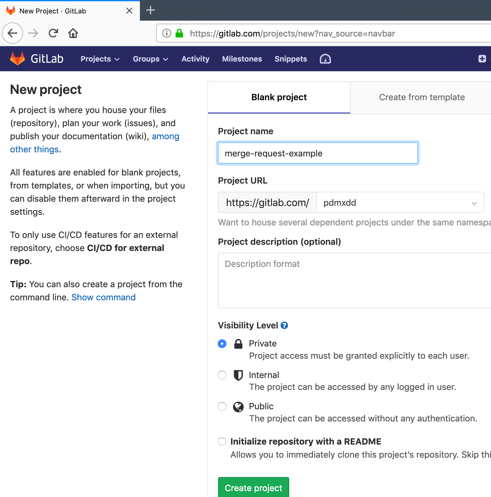
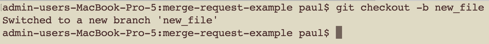
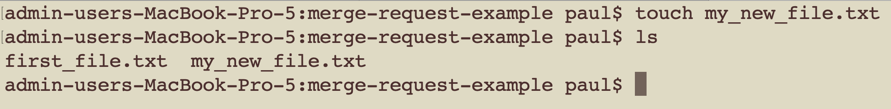
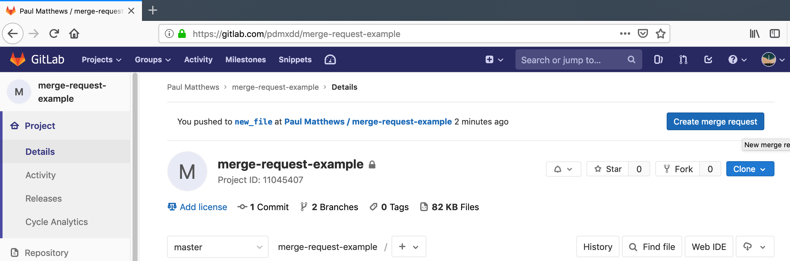
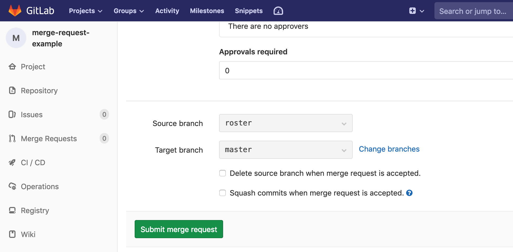

Walkthrough: Git and Gitlab
Follow along with the instructor as we review Git and Gitlab.
We will be using Git, and GitLab almost everyday throughout this class. This walkthrough will show you some of the basics. Primarily creating new projects, creating new branches, creating merge requests for branches, and resolving merge conflicts.
Setup
- You will need a Gitlab account (don’t worry it’s free)
- Go to gitlab.com
Follow Along as we…
Part 1 - Instructor Steps
- The instructor will create a new project on Gitlab for this walkthrough


- Instructor will add a file to the repo using a branch and a Maerge Request
- First the instructor will need to create new branch

- Then the instructor will have to add a new file

- Then the instructor will need to commit and push this new file

- Then the instructor will create a new merge request


The first part of this form tells us we are merging the new_file branch into the master branch. With every merge a commit is made, so you have the option to change the commit title, or message. There are other options in the Merge Request form such as assigning this merge request to a coworker, or fellow student. Nothing needs to be changed for now, so the instructor can scroll down to the submit merge request button.

- Instructor will merge the new request into the master branch
- Since there aren’t any merge conflicts this can be done automatically by clicking the merge button

- After our merge has completed we can see our master branch now contains my_new_file.txt the file added in the branch of the merge request

Part 1 - Student Steps
- In your terminal, clone the repo your instructor created
- Create a new branch. Example: blakes-branch
- Checkout the new branch
- Create a new file that includes your name in the filename. Example: blake.txt
- Stage and commit your change
- Push your branch to origin
- Go to gitlab.com and create a Merge Request for your branch
- Have another student merge your Merge Request
- Checkout master locally
- Do a git pull to see your changes now in master
Part 2 - Instructor Steps
- The instructor will create a new branch that includes a roster.txt file
- That branch will be merged into master


Part 2 - Student Steps
- Get the updated code by pulling in master git pull origin master
- Create and switch to a new branch git checkout -b blakes-roster-branch
- Add your name to the roster.txt file
- Stage, commit, and then push your changes
- You should get a merge conflict
- Resolve the conflict by editing the file that has the conflict
- Run git status in your terminal
- Run git add roster.txt to mark the conflict as resolved
- After resolving your conflicts you can push your changes to origin